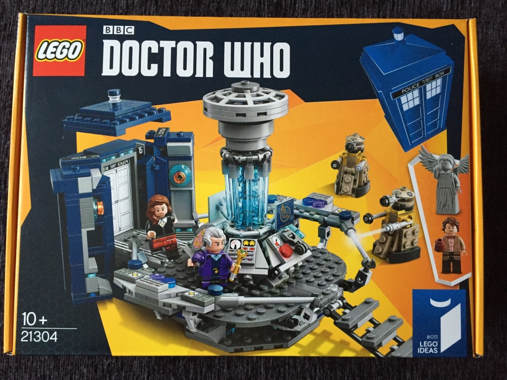

Lego Doctor Who
Published on: Jan 28, 2016
I haven't owned any Lego in very long time, but every time I walked past the Lego store in the Leeds Trinity Center I was tempted by a number of sets. The single biggest thing that put me off was the price tag attached to any set that belonged to a different IP.
This month my wife decided to buy me a gift for being a good husband and it turned out to be the Doctor Who Tadris Lego set that I had been tempted buy so many times. With a £50 price tag I had talked myself out of buying it before.
I set about building this in the living room on a Sunday afternoon and it ended up taking me 3:30 hours to follow all 121 pages of instructions to build it. The complexity and detail of the set were very surprising, whoever designed this did a bang up job. Here are some pictures of different stages of the build.
| Previous | Next |